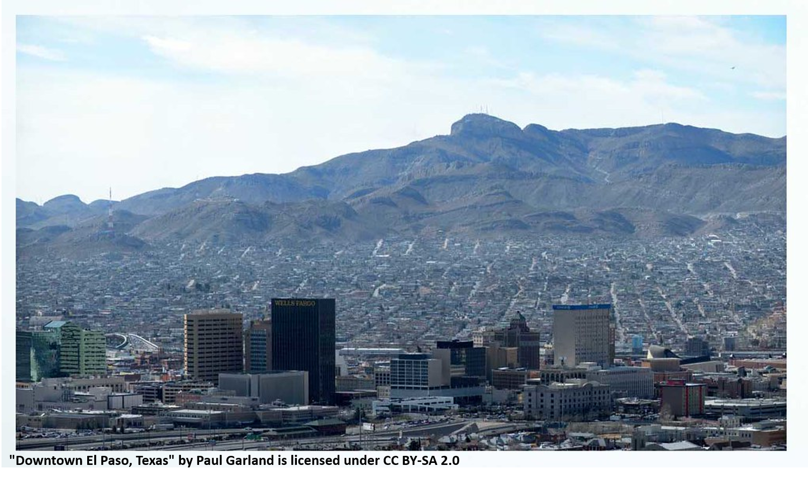

I examine the applicability of machine learning techniques for forecasting conflict around the globe. The models are assessed against multiple specifications of variables, in their ability to predict specific forms of conflict, and their performance over a span of ten years.

Bomb Tech’s Without Borders (BTWOB) is a 501(c)3 nonprofit organization whose mission is to help “rid the world of landmines and the casualties caused by them.” Our team of graduate students consulted with BTWOB to identify their data management requirements, assess their options, and impliment an initial database in AirTable.

I conduct an instrumental variables analysis to examine the impact of FanBoost on race performance in the Formula E racing series. Though my standard errors are too high for the 2SLS to work, I do find evidence of home track advantage in the series that manifests through FanBoost.

Our team conducted a strategic assessment of the city of El Paso, Tx. My team and I developed a three-pronged strategy focusing on El Paso's enterprises, people, and sense of place. Our vision was an El Paso which was focused on
economic opportunities such as the transportation sector, creating and leveraging an education system that ensured the city could train and retain the right talent for its sectors of advantage, and grow El Paso into a community in which residents love living, working, and playing.
For this project, I created a site selection assessment for a new shoe design firm. In this assessment, I identified and assessed various candidate cities to headquarter our hypothetical firm, including Baltimore, MD, Portland, OR, and the eventually selected site, Boston, MA. The assessment considered three criteria: the industrial cluster ecosystem, infrastructure, and quality of place. Boston stood out from the other candidate sites due to its position as a technology and fashion hub, its access to critical infrastructure, and the highly appealing quality of life it offers residents.